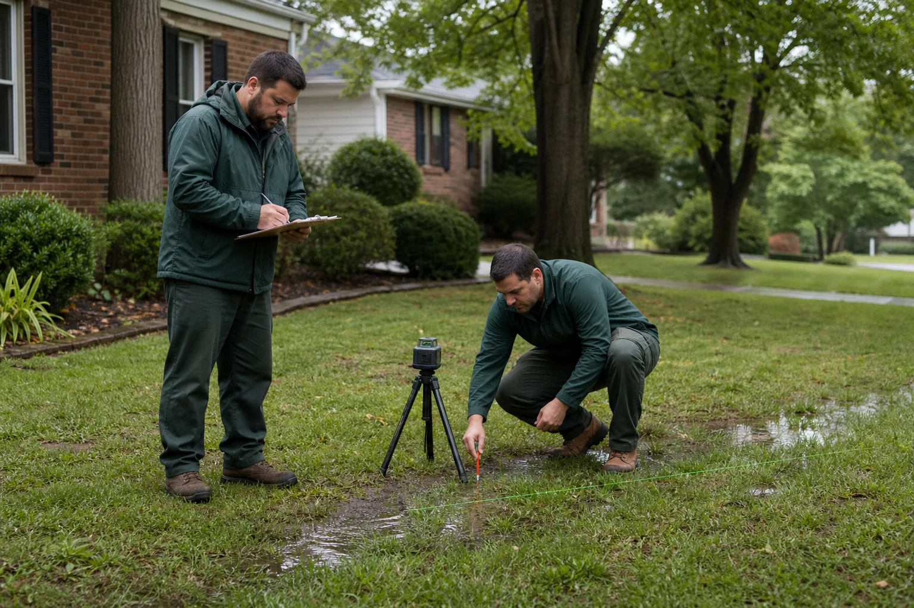

Yard Drainage
Permanent solutions for soggy lawns and standing water using French drains, catch basins, and grading.
Learn more →Clear drains. Better living.
Expert French drain installation, yard drainage, and foundation drainage across Greensboro and the Piedmont Triad—with free, written estimates.
What we solve
One call handles every drainage problem on your property—from soggy lawns to flooded foundations.
Permanent solutions for soggy lawns and standing water using French drains, catch basins, and grading.
Learn more →Relieve hydrostatic pressure and channel basement or crawlspace water toward a sump system.
Learn more →Intercept groundwater and surface runoff before moisture reaches your foundation.
Learn more →Engineered drainage systems for parking lots, warehouses, and large properties.
Learn more →Accurate diagnosis of drain lines, downspouts, grading, and the source of recurring water issues.
Learn more →Heavy-duty buried storm pipe sized and sloped to carry large volumes of water safely away.
Learn more →
Local drainage specialists
Greensboro Drain Guys is a licensed, fully insured drainage contractor serving homeowners and businesses throughout the Piedmont Triad. Our work stays in-house, so the crew that assesses your property is accountable for the result.
Free written estimate
Tell us what water is doing on your property. We’ll respond within one business hour.
From one soggy corner to a full commercial drainage system, we’ll inspect the site, explain the cause, and quote the right solution in writing.
Callback within one business hour